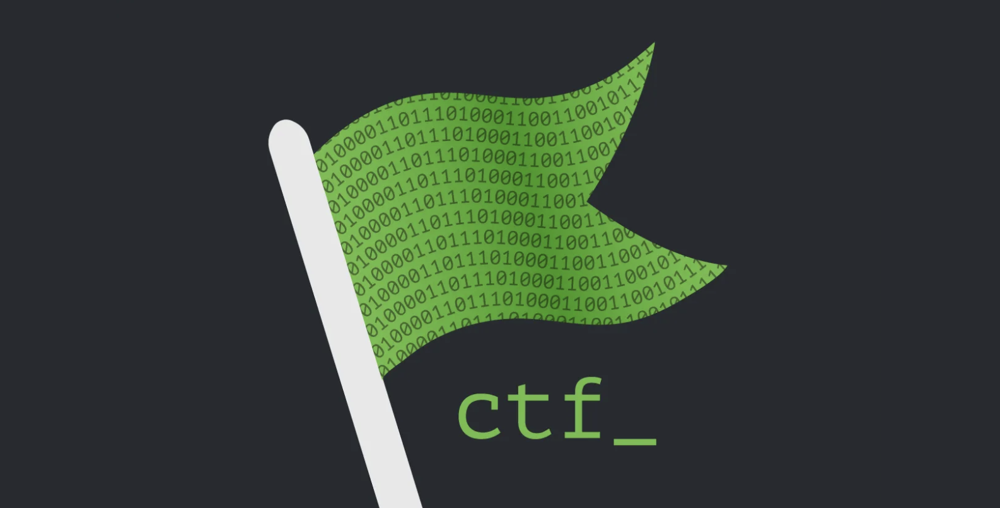

A curated archive of Root Me CTF challenge solutions for educational and ethical hacking practice. This repository provides step-by-step write-ups for a variety of web security, application security, and digital forensics challenges.
Challenge Categories
This repository is organized into several categories, each focusing on different aspects of cybersecurity challenges:
| Category | Description |
|---|---|
| Cross-Site Scripting | XSS attack techniques & solutions |
| CSRF | Cross-Site Request Forgery |
| PHP Vulnerabilities | File inclusion, upload, etc. |
| SQL Injection | SQLi types and bypasses |
| Steganography | Hidden data in files/images |
| Forensics | Digital forensics challenges |
Note: This is just my solution approach and it may not be correct at the time you attempt the challenge.
Disclaimer
Note that, you should read the disclaimer before "dive" into the challenges.